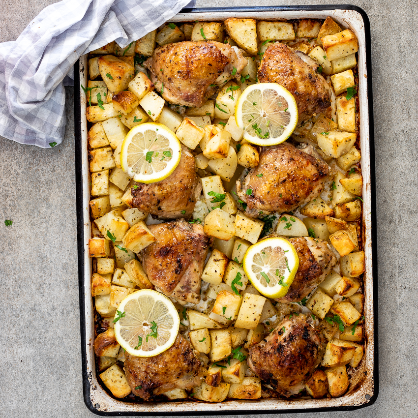

Greek Lemon Chicken and Potatoes
Description
Greek Lemon Chicken and Potatoes!

Cooking Information
- Prep: 10 mins
- Cook: 50 mins
- Total: 60 mins
- Servings: 4
- Yield: 4 servings
Nutrition Facts
Per Serving: 1139 calories; protein 80.4g; carbohydrates 34.5g; fat 74.5g; cholesterol 283.6mg; sodium 1865.5mg.
Ingredients
- 4 pounds skin-on, bone-in chicken thighs
- 1 tablespoon kosher salt
- 1 tablespoon dried oregano
- 1 teaspoon freshly ground black pepper
- 1 teaspoon dried rosemary
- 1 pinch cayenne pepper
- 1/2 cup fresh lemon juice
- 1/2 cup olive oil
- 6 cloves garlic, minced
- 3 russet potatoes, peeled and quartered
- 2/3 cup chicken broth, plus splash to deglaze pan
- chopped fresh oregano for garnish
Directions
- Step 1
- Preheat oven to 425 degrees F (220 degrees C). Lightly oil a large roasting pan.
- Step 2
- Place chicken pieces in large bowl. Season with salt, oregano, pepper, rosemary, and cayenne pepper. Add fresh lemon juice, olive oil, and garlic. Place potatoes in bowl with the chicken; stir together until chicken and potatoes are evenly coated with marinade.
- Step 3
- Transfer chicken pieces, skin side up, to prepared roasting pan, reserving marinade. Distribute potato pieces among chicken thighs. Drizzle with 2/3 cup chicken broth. Spoon remainder of marinade over chicken and potatoes.
- Step 4
- Place in preheated oven. Bake in the preheated oven for 20 minutes. Toss chicken and potatoes, keeping chicken skin side up; continue baking until chicken is browned and cooked through, about 25 minutes more. An instant-read thermometer inserted near the bone should read 165 degrees F (74 degrees C). Transfer chicken to serving platter and keep warm.
- Step 5
- Set oven to broil or highest heat setting. Toss potatoes once again in pan juices. Place pan under broiler and broil until potatoes are caramelized, about 3 minutes. Transfer potatoes to serving platter with chicken.
- Step 6
- Place roasting pan on stove over medium heat. Add a splash of broth and stir up browned bits from the bottom of the pan. Strain; spoon juices over chicken and potatoes. Top with chopped oregano.